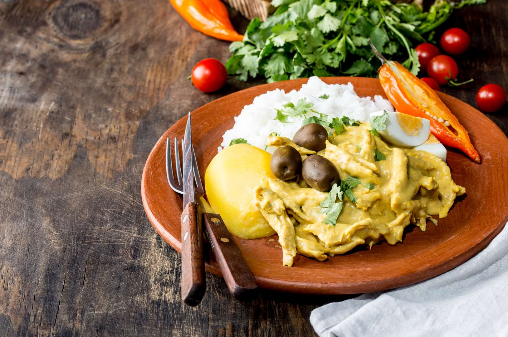
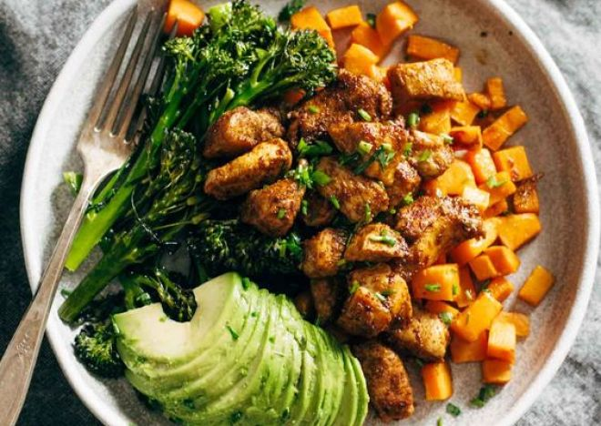
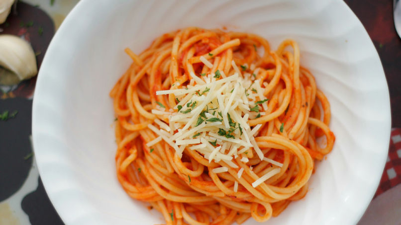
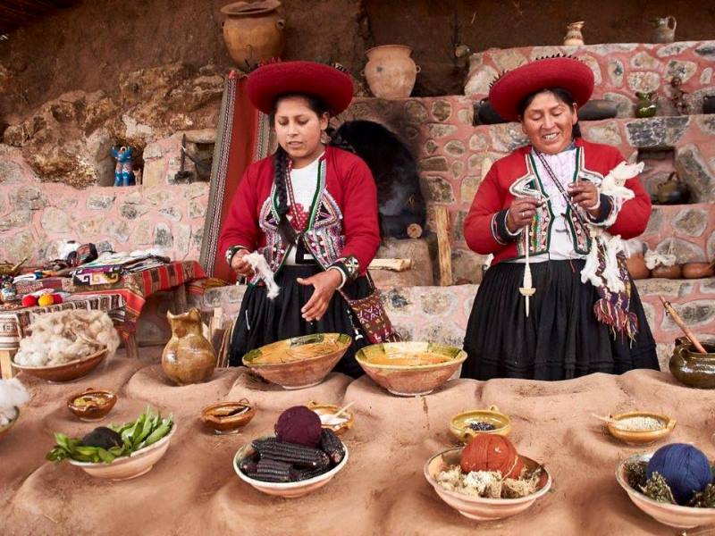

Favoritos





Historial
Historia del Espagueti
9-mayo-2012

Un poco de historia, de los noodles a los espaguetis. Se cree que fue Marco Polo, en uno de sus viajes al lejano oriente, a China, quien trajo de allí los fideos chinos o noodles. ... El caso es que los primeros documentos de este tipo de pasta, similar a los espaguetis, son del año 200 a.C.
Comidas Exóticas
20-abril-2016

Todo turista aventurero tiene que incluir en su plan de viaje probar las comidas exóticas de Ecuador. Este país situado exactamente en la mitad del mundo posee una amplia gastronomía que emplea ingredientes curiosos y fuera de lo común como gusanos, roedores y peces carnívoros.